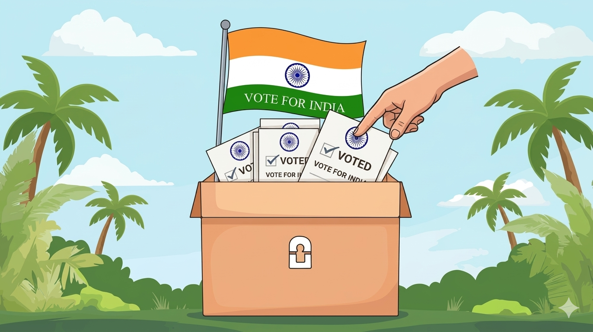
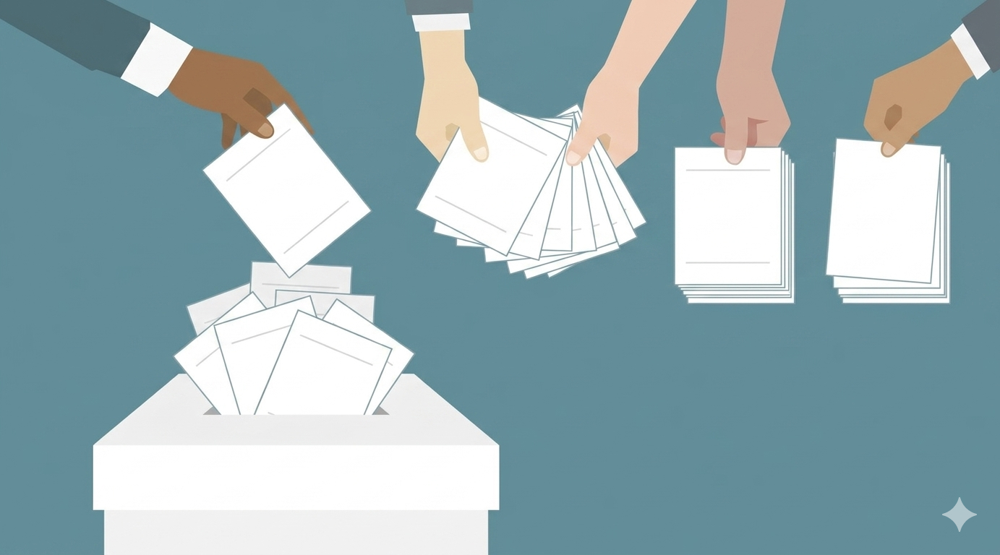
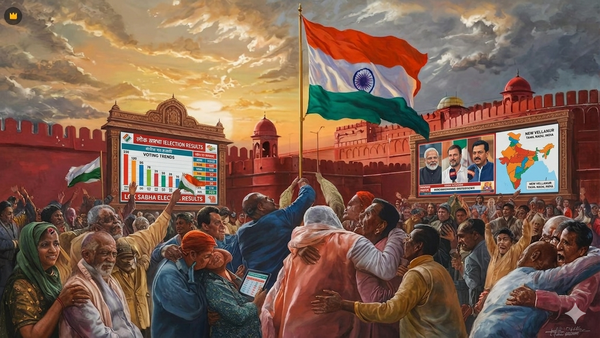

2. Campaigning
Candidates promote their ideas through rallies, speeches, and social media. This helps voters understand different choices and decide whom to support.

Citizens register themselves to become eligible voters. Any Indian citizen who is 18 years or older can apply for a voter ID. After registration, their name is added to the voter list.
Candidates promote their ideas through rallies, speeches, and social media. This helps voters understand different choices and decide whom to support.

On election day, voters go to polling booths and cast their vote using Electronic Voting Machines (EVMs). Voting is private and secure.

After voting ends, all votes are counted in special centers. Officials carefully count each vote under strict supervision.

The candidate with the highest number of votes wins the election. Winning candidates form the government.